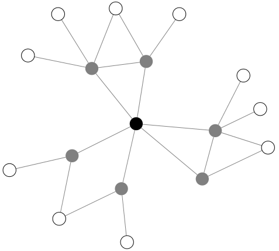
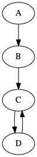
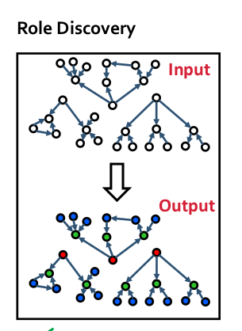

Sony Music Entertainment
ネットワーク分析
Jiyan Jonas Schneider
データの確認
- 三組共通のデータ：
- apple music
- 期間中のメディア露出
- ツイート情報
- フォロワーリスト
目次
- 用語
- 記述統計
- 分析手法の紹介
- 問題点
用語
| 単語 | 説明 | 今回で言えば |
|---|---|---|
| ノード (Node) | データの中の頂点 | 一つのTwitter Account |
| エッジ (Edge) | データの中の辺 | 一つのフォロ |
| 入次数 (In-Degree) | 某ノードに入ってくるエッジ数 | 一人のフォロワー数 |
| 出次数 (Out-Degree) | 某ノードから出ていくエッジの数 | 一人がフォローしている数 |
| 次数 (Degree) | 一つのノードにつながるエッジ数 | 一人のフォロワーとフォロー数の合計 |

エゴネットワーク
- 対象ノード、一次２じフォロワーを含めた集合体をエゴネットワークとよぶ
- 今回のネットワークはこれに当てはまります

Figure 2: 画像には表示していない、２次フォロワーの間でのフォローも可能
次数分布
定義：ネットワークの入次数や出次数の分布 [ [ 次数分布の画像？ ] ]
- このネットワークではフォロワー数の分布やフォロー数の分布
直径
定義：ネットワークの最も長い最短経路
- A から D へ：3
- B から D へ：2
- D から C へ：1
- C から B へ： -

Figure 3: 最短経路
平均最短路
定義：ネットワークの全部の最短経路の平均
- Small world Phenomenon
- Facebook 上での平均最短路は3.83
- エゴネットワークだと必ず1と２の間
クラスター係数
- ノードの周りははどのくらい （密接？）なのかを表す数字
- ノードの隣のノードの間のエッジ数をあり得るエッジ数で割ったもの
- ノード \( i \)の次数は \( k_{i} \)

Figure 4: Clustering Coefficient (Source)
平均クラスター係数
- 全体のネットワークのクラスター数の平均
- おそらくエゴネットワークのためで低く見えてしてまう
分析手法
- モチーフ分析
- 重要性プロファイル
- 役割検出
- コミュニティー検出
- 中心性
モチーフ分析
- 3ノードの繋がり方は１３通り存在する

三つのノードの間で可能な繋がり方
Significance Profile
注目点
- 分野によって重要性プロファイルが似ている
- それぞれのモチーフの特性を吟味する
Significance Profile

実装の手法例
- ランダムで作ったネットワークの各モチーフの分布に本ネットワークの分布を比べて需要性プロファイルを作成
- ネットワークにあるモチーフの分布でそのモチーフの重要性を計算数る
- 3-モチーフ、ノードの関係性
- ベースのモデルを選び、それに比べて、モチーフの z-score を算出
- 例えばスケールフリーのネットワークの分布をもつランダムなネットワークをシミュレーション
- シミュレーションだけではなく、典型的なソーシャルネットワークに比べることもできる
- アーティスト同士での significance も計算可能
Z-scoreの算出
\( Z_{i} = \frac{N_{i}^{real} - N_{i}^{rand}}{sd(N_{i}^{rand})} \)
- \( N_{i}^{real} \) (モチーフ \( i \) が実際に起きた回数)
- \( N_{i}^{rand} \) (モチーフ \( i \) がシミュレーションで起きた回数)
役割検出
- 各ノードのモチーフ分布をみて、ネットワークの中での役割を見つける

Figure 8: 役割検出
- 青：一人をフォローする役割
- 緑：フォローされる役割
- 赤：複数人をフォローする人
RolX

Figure 9: Co-Authorship Net (Source)
中心性
- 中心性の種類いくつかある
- 入次数中心性：フォロワーの一番多い人
- 近接中心性：全員への平均最短ルートが一番短い
- 媒介中心性：全員から全員への最短ルートに最も出てくるノード
- PageRank: 最も人気のあるノードに人気のあるノードのこと
- エゴネットワークのための特別なものもある https://www.sciencedirect.com/science/article/abs/pii/S037887330400067X
- Ego Networkではみてもそこまで面白くないのかも
問題点
- エゴネットワークしかないため、できることが限られてくる
- 幅優先探索ではなく深さ優先でデータを収集は可能か？
- 例えば一つのアカウントの全員のフォロワーの情報ではなくランダムで選んだ数人にうつり、そうやって進む
- そうすれば全体のネットワークの構造にもっと近い物ができるのではないかと
- ネットワーク解析でいいツールを見つけるのは少し難しい